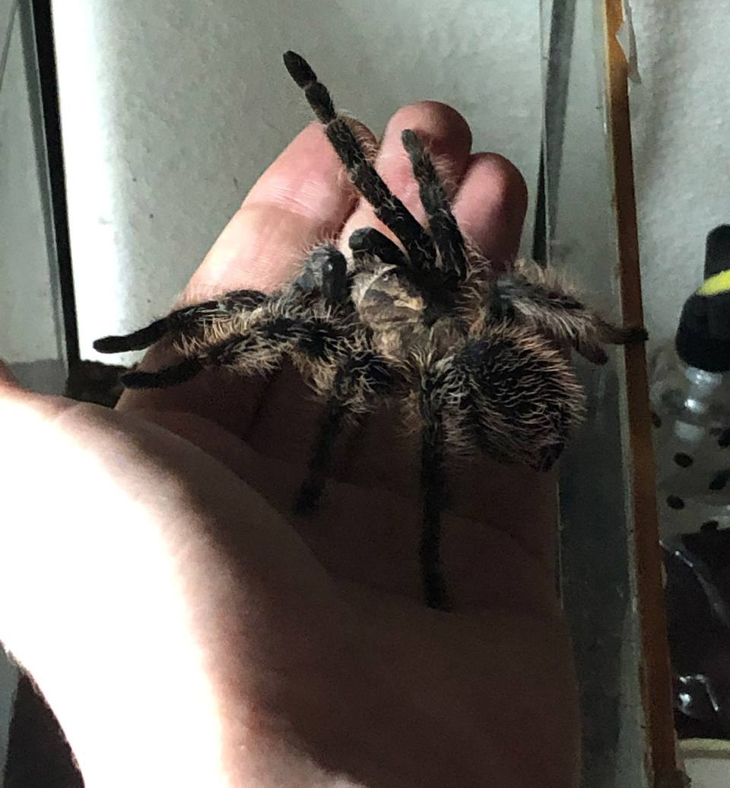
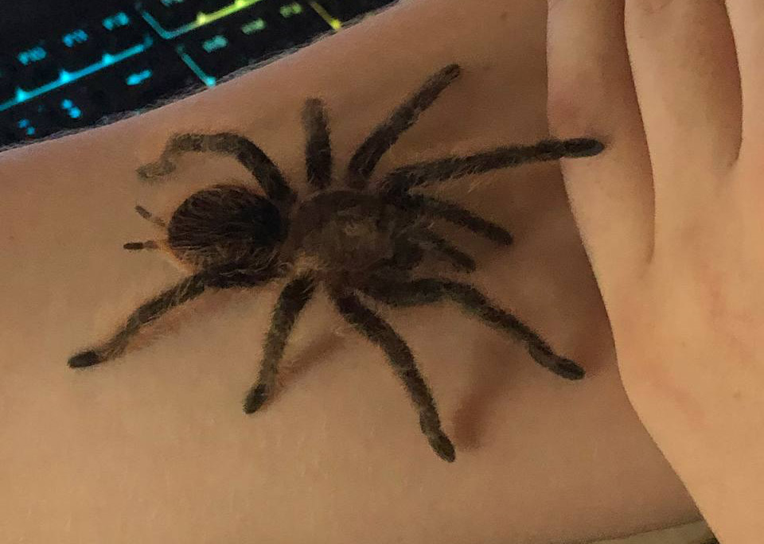
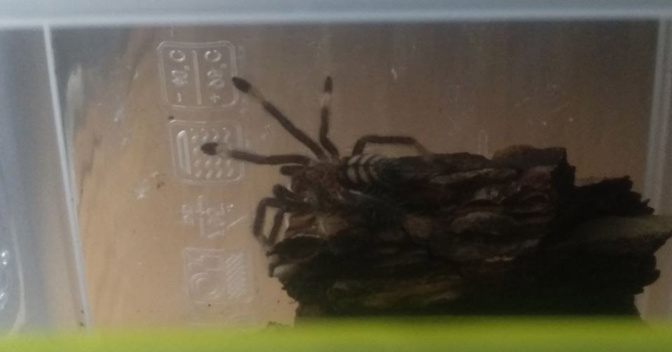

My pets


Сколько людей, столько и домашних животных. Кто-то любит кошек, кто-то собак, а я люблю пауков.

Это самый большой паук, который есть у меня дома, по совместительству первый, большой черный паук с красно-рыжими волосками на брюшке. Быстрый и достаточно нервный паук.
Брахипельма Ваганс
Я начал увлекаться пауками летом 2021 года, когда впервые увидел большого паука на выставке экзотических животных, среди которых были не только пауки, но и богомолы, ящерицы, лягушки.

Моим вторым пауком стал брахипельма альбопилосум. Крупный и крайне спокойный паук темно-коричневого окраса.

Третий птицеед ещё совсем маленький, всего 1 см в туловище, но резвый, яркий и густо плетущий паутину Псалмопеус Ирминия
Всё начинается с консультации, которая перерастает в техническое задание, сбор материалов, написание текста, разработку сайта на языках программирования или конструкторах и наконец в полноценный проект, полностью готовый к запуску.
Давайте начнём наш проект